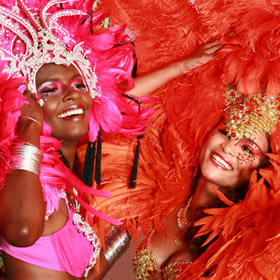

1
Trinidad and Tobago Carnival
Known as the biggest street party on Earth- Trinidad and Tobago’s Carnival is officially celebrated on the Monday and Tuesday before Ash Wednesday every year. The Carnival festivities start just after Christmas and continues until Ash Wednesday-loaded with dozens of high energy parties and premier cultural competitions. Carnival Monday opens with J’Ouvert at 4am, when revellers parade through the streets immersed in paint, grease and mud until sunrise. Later in the day on Monday and all day on Carnival Tuesday, thousands of masqueraders flood the streets throughout the islands in bold, colourful costumes, dancing through the parade routes to the exhilarating sounds of soca, steelpan and calypso music.From its diverse people and culture to its amazing biodiversity, Trinidad and Tobago breaks the mould of the typical Caribbean destination. These islands boast a year-long calendar of cultural events and festivals on both islands, friendly, multi-ethnic people and amazing opportunities for eco-adventure: everything from birding to biking to hiking to diving and cave exploring.